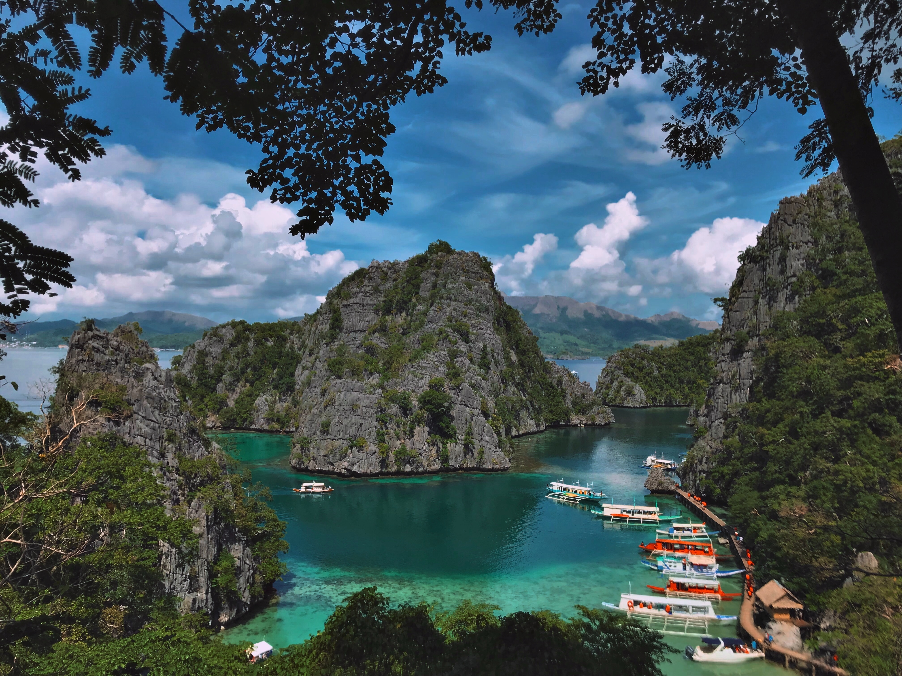

El Nido
Dive deeper than turquoise waters. Immerse yourself in the vibrant colors and soulful rhythms of El Nido, where smiles light the way to hidden wonders.


Bilar-Man-Made-Forest
Born from human hands, nurtured by time. Bohol's Man-Made Forest stands as a testament to our connection with the earth. Walk its leafy paths and feel the history pulse beneath your feet.
Palawan
Whether you seek adrenaline-pumping adventures, sun-drenched relaxation, or a romantic escape, Palawan's diverse beauty holds the key. Unravel its secrets, and find your perfect island moment.
